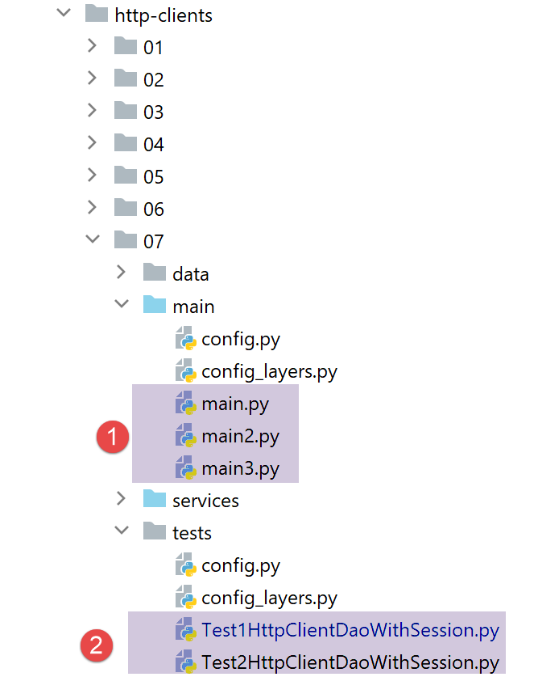

33. Exercício prático: versão 13
A versão 13 altera a versão 12 nos seguintes aspetos:
- reestrutura-se parte do código (refactoring);
- a sessão é gerida de forma diferente, utilizando o módulo [flask_session];
- utilizam-se palavras-passe encriptadas no ficheiro de configuração;
A versão 13 é obtida inicialmente através da cópia da versão 12:


- no [1], a configuração será refatorada. Em particular, é removida da pasta [flask];
- em [2], o script principal será refatorado. Também é retirado da pasta [flask];
- em [3], a configuração será dividida em vários ficheiros;
- no [4]: vamos simplificar o script principal [main], transferindo código para outros ficheiros;
- em [5], o controlador de autenticação será alterado, uma vez que, a partir de agora, as palavras-passe dos utilizadores serão encriptadas;
- no [6], o controlador principal irá integrar código anteriormente presente no script principal [main];
33.1. Reestruturação da configuração da aplicação

Aparecem três novos ficheiros de configuração:
- [mvc]: para configurar a arquitetura MVC da aplicação;
- [parameters]: que irá reunir todas as constantes da aplicação;
- [syspath]: que configura o Python Path da aplicação;
O ficheiro [syspath.py] é o seguinte:
def configure(config: dict) -> dict:
import os
# pasta deste ficheiro
script_dir = os.path.dirname(os.path.abspath(__file__))
# caminho raiz
root_dir = "C:/Data/st-2020/dev/python/cours-2020/python3-flask-2020"
# dependências
absolute_dependencies = [
# pastas do projeto
# BaseEntity, MyException
f"{root_dir}/classes/02/entities",
# InterfaceImpôtsDao, InterfaceImpôtsMétier, InterfaceImpôtsUi
f"{root_dir}/impots/v04/interfaces",
# AbstractImpôtsdao, ImpôtsConsole, ImpôtsMétier
f"{root_dir}/impots/v04/services",
# ImpotsDaoWithAdminDataInDatabase
f"{root_dir}/impots/v05/services",
# AdminData, ImpôtsError, TaxPayer
f"{root_dir}/impots/v04/entities",
# Constantes, intervalos
f"{root_dir}/impots/v05/entities",
# Logger, SendAdminMail
f"{root_dir}/impots/http-servers/02/utilities",
# pasta do script principal
script_dir,
# configurações [database, layers, parameters, controllers, views]
f"{script_dir}/../configs",
# controladores
f"{script_dir}/../controllers",
# respostas HTTP
f"{script_dir}/../responses",
# modelos das vistas
f"{script_dir}/../models_for_views",
]
# definir o syspath
from myutils import set_syspath
set_syspath(absolute_dependencies)
# efetuar a configuração
return {
"root_dir": root_dir,
"script_dir": script_dir
}
- o script [syspath] serve para configurar o Python Path da aplicação (linhas 40-41);
- fornece duas informações úteis aos outros scripts de configuração (linhas 45-46);
O script [mvc] configura a arquitetura MVC da aplicação web jSON / XML / HTML:
def configure(config: dict) -> dict:
# configuração da aplicação MVC
# os controladores
from AfficherCalculImpotController import AfficherCalculImpotController
from AuthentifierUtilisateurController import AuthentifierUtilisateurController
from CalculerImpotController import CalculerImpotController
from CalculerImpotsController import CalculerImpotsController
from FinSessionController import FinSessionController
from GetAdminDataController import GetAdminDataController
from InitSessionController import InitSessionController
from ListerSimulationsController import ListerSimulationsController
from MainController import MainController
from SupprimerSimulationController import SupprimerSimulationController
# as respostas HTTP
from HtmlResponse import HtmlResponse
from JsonResponse import JsonResponse
from XmlResponse import XmlResponse
# os modelos das vistas
from ModelForAuthentificationView import ModelForAuthentificationView
from ModelForCalculImpotView import ModelForCalculImpotView
from ModelForErreursView import ModelForErreursView
from ModelForListeSimulationsView import ModelForListeSimulationsView
# ações autorizadas e os respetivos controladores
controllers = {
# inicialização de uma sessão de cálculo
"init-session": InitSessionController(),
# autenticação de um utilizador
"authentifier-utilisateur": AuthentifierUtilisateurController(),
# cálculo do imposto no modo individual
"calculer-impot": CalculerImpotController(),
# cálculo do imposto em modo de lotes
"calculer-impots": CalculerImpotsController(),
# lista de simulações
"lister-simulations": ListerSimulationsController(),
# eliminação de uma simulação
"supprimer-simulation": SupprimerSimulationController(),
# fim da sessão de cálculo
"fin-session": FinSessionController(),
# exibição da vista de cálculo do imposto
"afficher-calcul-impot": AfficherCalculImpotController(),
# obtenção dos dados da administração fiscal
"get-admindata": GetAdminDataController(),
# controlador principal
"main-controller": MainController()
}
# os diferentes tipos de resposta (json, xml, html)
responses = {
"json": JsonResponse(),
"html": HtmlResponse(),
"xml": XmlResponse()
}
# as vistas HTML e os seus modelos dependem do estado devolvido pelo controlador
views = [
{
# vista de autenticação
"états": [
700, # /init-session - sucesso
201, # /autenticar-utilizador – falha
],
"view_name": "views/vue-authentification.html",
"model_for_view": ModelForAuthentificationView()
},
{
# visualização do cálculo do imposto
"états": [
200, # /autenticar-utilizador bem-sucedido
300, # /calcular-imposto bem-sucedido
301, # /calcular-imposto falha
800, # /exibir-cálculo-do-imposto bem-sucedido
],
"view_name": "views/vue-calcul-impot.html",
"model_for_view": ModelForCalculImpotView()
},
{
# visualização da lista de simulações
"états": [
500, # /listar-simulações (sucesso)
600, # /eliminar-simulação bem-sucedido
],
"view_name": "views/vue-liste-simulations.html",
"model_for_view": ModelForListeSimulationsView()
},
]
# visualização de erros inesperados
view_erreurs = {
"view_name": "views/vue-erreurs.html",
"model_for_view": ModelForErreursView()
}
# redirecionamentos
redirections = [
{
"états": [
400, # /fim-da-sessão bem-sucedida
],
# redirecionamento para o URL
"to": "/init-session/html",
}
]
# a configuração é devolvida para MVC
return {
# controladores
"controllers": controllers,
# respostas HTTP
"responses": responses,
# visualizações e modelos
"views": views,
# lista de redirecionamentos
"redirections": redirections,
# visualização de erros inesperados
"view_erreurs": view_erreurs
}
- linhas 1-101: este código é conhecido;
- linhas 105-116: é apresentada a configuração MVC da aplicação;
O script [parameters] reúne as constantes da aplicação:
def configure(config: dict) -> dict:
# configuração da aplicação
# script_dir
script_dir = config['syspath']['script_dir']
# configuração da aplicação
parameters = {
# utilizadores autorizados a utilizar a aplicação
"users": [
{
"login": "admin",
"password": "$pbkdf2-sha256$29000$mPM.h3COkTIGYOzde68VIg$7LH5Q7rN/1hW.Xa.6rcmR6h52PntvVqd5.na7EtgQNw"
}
],
# ficheiro de registos
"logsFilename": f"{script_dir}/../data/logs/logs.txt",
# configuração do servidor SMTP
"adminMail": {
# servidor SMTP
"smtp-server": "localhost",
# porta do servidor SMTP
"smtp-port": "25",
# administrador
"from": "guest@localhost.com",
"to": "guest@localhost.com",
# assunto do e-mail
"subject": "plantage du serveur de calcul d'impôts",
# TLS definido como «True» se o servidor SMTP exigir autenticação; caso contrário, definido como «False»
"tls": False
},
# duração da pausa do thread em segundos
"sleep_time": 0,
# servidor Redis
"redis": {
"host": "127.0.0.1",
"port": 6379
},
}
# definimos a configuração da aplicação
return parameters
- linha 13: a partir de agora, as palavras-passe dos utilizadores serão encriptadas;
- linhas 34-38: a configuração de um servidor [Redis], ao qual voltaremos mais tarde;
Com estes novos ficheiros de configuração, o script [config] passa a ter o seguinte aspeto:
def configure(config: dict) -> dict:
# configuração do syspath
import syspath
config['syspath'] = syspath.configure(config)
# configuração da aplicação
import parameters
config['parameters'] = parameters.configure(config)
# configuração da base de dados
import database
config["database"] = database.configure(config)
# instanciação das camadas da aplicação
import layers
config['layers'] = layers.configure(config)
# configuração MVC da camada [web]
import mvc
config['mvc'] = mvc.configure(config)
# a configuração é devolvida
return config
33.2. Reestruturação do script principal [main]

O script principal [main.py] limita-se a iniciar o servidor:
# aguarda-se um parâmetro mysql ou pgres
import sys
syntaxe = f"{sys.argv[0]} mysql / pgres"
erreur = len(sys.argv) != 2
if not erreur:
sgbd = sys.argv[1].lower()
erreur = sgbd != "mysql" and sgbd != "pgres"
if erreur:
print(f"syntaxe : {syntaxe}")
sys.exit()
# configura-se a aplicação
import config
config = config.configure({'sgbd': sgbd})
# dependências
from SendAdminMail import SendAdminMail
from Logger import Logger
from ImpôtsError import ImpôtsError
import redis
# envio de um e-mail ao administrador
def send_adminmail(config: dict, message: str):
# envio de um e-mail ao administrador da aplicação
config_mail = config['parameters']['adminMail']
config_mail["logger"] = config['logger']
SendAdminMail.send(config_mail, message)
# verificação do ficheiro de registos
logger = None
erreur = False
message_erreur = None
try:
# registo
logger = Logger(config['parameters']['logsFilename'])
except BaseException as exception:
# registo na consola
print(f"L'erreur suivante s'est produite : {exception}")
# registar o erro
erreur = True
message_erreur = f"{exception}"
# o logger é guardado na configuração
config['logger'] = logger
# gestão de erros
if erreur:
# envio de e-mail ao administrador
send_adminmail(config, message_erreur)
# fim da aplicação
sys.exit(1)
# registo de arranque
log = "[serveur] démarrage du serveur"
logger.write(f"{log}\n")
# verificação da disponibilidade do servidor Redis
redis_client = redis.Redis(host=config["parameters"]["redis"]["host"],
port=config["parameters"]["redis"]["port"])
# está a ser feito um ping ao servidor Redis
try:
redis_client.ping()
except BaseException as exception:
# Redis indisponível
log = f"[serveur] Le serveur Redis n'est pas disponible : {exception}"
# consola
print(log)
# registo
logger.write(f"{log}\n")
# fim
sys.exit(1)
# o cliente [redis] é guardado na configuração
config['redis_client'] = redis_client
# recuperação de dados da administração fiscal
erreur = False
try:
# admindata será um dado de âmbito da aplicação, apenas para leitura
config["admindata"] = config["layers"]["dao"].get_admindata()
# registo de sucesso
logger.write("[serveur] connexion à la base de données réussie\n")
except ImpôtsError as ex:
# registo do erro
erreur = True
# registo de erro
log = f"L'erreur suivante s'est produite : {ex}"
# consola
print(log)
# ficheiro de registos
logger.write(f"{log}\n")
# e-mail para o administrador
send_adminmail(config, log)
# o thread principal já não necessita do logger
logger.close()
# se tiver ocorrido um erro, o processo é interrompido
if erreur:
sys.exit(2)
# importar as rotas da aplicação web
import routes
routes.config=config
routes.execute(__name__)
- linhas 56-73: introduz-se um servidor Redis e o seu cliente;
- linhas 102-104: as rotas da aplicação foram externalizadas para o script [routes];
33.2.1. Os módulos [flask_session] e [redis]
O servidor [Redis] será utilizado para armazenar as sessões dos utilizadores. Iremos utilizar o módulo [flask_session] para gerir essas sessões. Este módulo pode armazenar as sessões dos utilizadores em vários locais. O Redis é um desses locais e iremos utilizá-lo.
O módulo [flask_session] deve ser instalado num terminal PyCharm:
(venv) C:\Data\st-2020\dev\python\cours-2020\python3-flask-2020\packages>pip install flask-session
Collecting flask-session
…
Para comunicar com o servidor Redis, precisamos de um cliente Redis. Este será-nos fornecido pelo módulo [redis], que também iremos instalar:
(venv) C:\Data\st-2020\dev\python\cours-2020\python3-flask-2020\packages>pip install redis
Collecting redis
…
33.2.2. O servidor Redis
O servidor Redis servirá para armazenar as sessões dos utilizadores. O módulo [flask_session] funciona da seguinte forma:
- cada utilizador tem um identificador de sessão e é esse identificador que é enviado ao cliente, e apenas isso. O cliente recebe um cookie de sessão apenas uma vez, no final da sua primeira solicitação. Este cookie contém o identificador de sessão do utilizador, que não se alterará ao longo das solicitações do cliente. É por isso que o servidor não precisa de reenviar um novo cookie de sessão;
- anteriormente, o conteúdo da sessão era enviado ao cliente. Isso já não acontecerá. O conteúdo da sessão do utilizador será armazenado no servidor Redis;
O Laragon vem com um servidor Redis desativado por predefinição. Por isso, é necessário começar por ativá-lo:

- em [3], ative o servidor [Redis];
- em [4], mantenha a porta [6379] que os clientes Redis utilizam por predefinição;
Os serviços do Laragon são reiniciados automaticamente após a ativação do Redis:

O servidor Redis pode ser consultado no modo de comando. Abre-se um terminal Laragon [6]:

- em [1], o comando [redis-cli] inicia o cliente no modo de comando do servidor Redis;
Em julho de 2019, o cliente Redis pode utilizar 172 comandos para comunicar com o servidor [https://redis.io/commands#list]. Um deles, [command count] [2], apresenta este número: [3].
A gravação em [Redis] é efetuada com o comando Redis [set attribut valeur] [4]. O valor pode, em seguida, ser recuperado com o comando [get attribut] [5].
Pode ser necessário esvaziar a memória do Redis. Isto é feito com o comando [flushdb] [6]. Posteriormente, se solicitarmos o valor do atributo [titre] [7], obtemos uma referência [nil] [8] indicando que o atributo não foi encontrado. Também é possível utilizar o comando [exists] [9-10] para verificar a existência de um atributo.
Para sair do cliente Redis, digite o comando [quit] [11].
Também é possível utilizar uma interface web para gerir as chaves presentes no servidor Redis. Para tal, é necessário que o servidor Apache do Laragon esteja em execução:

É apresentada a seguinte interface:

- em [1-4], uma das sessões armazenadas no servidor Redis;
33.2.3. Gestão do servidor Redis no script principal [main]
O script [main] verifica a presença do servidor Redis da seguinte forma:
import redis
…
# verifica-se a disponibilidade do servidor Redis
redis_client = redis.Redis(host=config["parameters"]["redis"]["host"],
port=config["parameters"]["redis"]["port"])
# faz-se um ping ao servidor Redis
try:
redis_client.ping()
except BaseException as exception:
# Redis indisponível
log = f"[serveur] Le serveur Redis n'est pas disponible : {exception}"
# consola
print(log)
# registo
logger.write(f"{log}\n")
# fim
sys.exit(1)
# o cliente [redis] é guardado na configuração
config['redis_client'] = redis_client
- linha 4: o construtor da classe [redis.Redis] cria um cliente do servidor Redis. As características deste (endereço, porta) encontram-se no script [parameters];
- linha 8: o método [ping] permite verificar a presença do servidor Redis;
- linhas 9-17: se o ping falhar, o erro é registado e o servidor é encerrado;
- linha 20: a referência do cliente Redis é inserida na configuração;
33.2.4. Gestão das rotas no script principal [main]
A gestão das rotas no [main] limita-se às seguintes linhas:
# importação das rotas da aplicação web
import routes
routes.config=config
routes.execute(__name__)
- linha 1: as rotas foram externalizadas para o módulo [routes];
- linha 3: as rotas precisam de conhecer a configuração da execução;
- linha 4: lança-se a aplicação Flask, passando-lhe o nome do script executado (__main__);
O script das rotas é o seguinte:
# dependências
import os
from flask import Flask, redirect, request, session, url_for
from flask_api import status
from flask_session import Session
# aplicação Flask
app = Flask(__name__, template_folder="../flask/templates", static_folder="../flask/static")
# configuração da aplicação
config = {}
# o controlador frontal
def front_controller() -> tuple:
# a solicitação é encaminhada para o controlador principal
main_controller = config['mvc']['controllers']['main-controller']
return main_controller.execute(request, session, config)
@app.route('/', methods=['GET'])
def index() -> tuple:
# redirecionamento para /init-session/html
return redirect(url_for("init_session", type_response="html"), status.HTTP_302_FOUND)
# init-session
@app.route('/init-session/<string:type_response>', methods=['GET'])
def init_session(type_response: str) -> tuple:
# é executado o controlador associado à ação
return front_controller()
# autenticar-utilizador
@app.route('/authentifier-utilisateur', methods=['POST'])
def authentifier_utilisateur() -> tuple:
# executa-se o controlador associado à ação
return front_controller()
# calcular-imposto
@app.route('/calculer-impot', methods=['POST'])
def calculer_impot() -> tuple:
# executa-se o controlador associado à ação
return front_controller()
# cálculo do imposto em lotes
@app.route('/calculer-impots', methods=['POST'])
def calculer_impots():
# executa-se o controlador associado à ação
return front_controller()
# listar simulações
@app.route('/lister-simulations', methods=['GET'])
def lister_simulations() -> tuple:
# executa-se o controlador associado à ação
return front_controller()
# eliminar-simulação
@app.route('/supprimer-simulation/<int:numero>', methods=['GET'])
def supprimer_simulation(numero: int) -> tuple:
# executa-se o controlador associado à ação
return front_controller()
# fim-sessão
@app.route('/fin-session', methods=['GET'])
def fin_session() -> tuple:
# executa-se o controlador associado à ação
return front_controller()
# exibir-cálculo-impostos
@app.route('/afficher-calcul-impot', methods=['GET'])
def afficher_calcul_impot() -> tuple:
# executa-se o controlador associado à ação
return front_controller()
# obter-dados-administrativos
@app.route('/get-admindata', methods=['GET'])
def get_admindata() -> tuple:
# é executado o controlador associado à ação
return front_controller()
def execute(name: str):
# chave secreta da sessão
app.secret_key = os.urandom(12).hex()
# Flask-Session
app.config.update(SESSION_TYPE='redis',
SESSION_REDIS=config['redis_client'])
Session(app)
# caso em que se inicia a aplicação Flask através de um script de consola
if name == '__main__':
app.config.update(ENV="development", DEBUG=True)
app.run(threaded=True)
- linha 9: a aplicação Flask é instanciada;
- linha 12: a configuração da aplicação ainda não é conhecida no momento da escrita do script. Só é conhecida no momento da sua execução;
- linhas 20-77: as rotas da aplicação tal como estavam definidas na versão anterior. Não há alterações;
- linhas 14-18: todas as rotas limitam-se a chamar a função [front_controller]. Retirámos o código inicial desta função. Agora, ela limita-se a chamar o controlador principal da aplicação web;
- linhas 79-89: [execute] é a função chamada pelo script [main] para iniciar a aplicação web;
- linha 81: o módulo [flask_session] utiliza a chave secreta do Flask;
- linhas 82-84: configuração do módulo [flask_session]. Esta consiste em adicionar as chaves [SESSION_TYPE, SESSION_REDIS] à configuração [app.config] da aplicação Flask [app]:
- [SESSION_TYPE]: o tipo da sessão. Existem vários tipos. O tipo [redis] indica que o [flask_session] utiliza um servidor [redis] para armazenar as sessões dos utilizadores. Por esse motivo, é necessário definir a chave [SESSION_REDIS], que deve corresponder a um cliente Redis;
- linha 85: a sessão [Flask-Session] está associada à aplicação Flask;
- linhas 86-89: se o parâmetro [name] da linha 79 for a cadeia [__main__], então a aplicação Flask é iniciada;
33.3. Reestruturação do controlador principal
O código que anteriormente se encontrava na função [front_controller] do script [main] foi transferido para o controlador principal:

# importação de dependências
import threading
import time
from random import randint
from flask_api import status
from werkzeug.local import LocalProxy
from InterfaceController import InterfaceController
from Logger import Logger
from SendAdminMail import SendAdminMail
def send_adminmail(config: dict, message: str):
# envio de um e-mail ao administrador da aplicação
config_mail = config['parameters']['adminMail']
config_mail["logger"] = config['logger']
SendAdminMail.send(config_mail, message)
# controlador principal da aplicação
class MainController(InterfaceController):
def execute(self, request: LocalProxy, session: LocalProxy, config: dict) -> (dict, int):
# processar a solicitação
logger = None
action = None
type_response1 = None
try:
# recuperam-se os elementos do caminho
params = request.path.split('/')
# a ação é o primeiro elemento
action = params[1]
# sem erros iniciais
erreur = False
# o tipo de sessão deve ser conhecido antes de determinadas ações
type_response1 = session.get('typeResponse')
if type_response1 is None and action != "init-session":
# regista-se o erro
résultat = {"action": action, "état": 101,
"réponse": ["pas de session en cours. Commencer par action [init-session]"]}
erreur = True
# registar
logger = Logger(config['parameters']['logsFilename'])
# armazenamo-lo numa configuração associada ao thread
thread_config = {"logger": logger}
thread_name = threading.current_thread().name
config[thread_name] = {"config": thread_config}
# regista-se o pedido
logger.write(f"[MainController] requête : {request}\n")
# interrompe-se o thread, caso tal tenha sido solicitado
sleep_time = config['parameters']['sleep_time']
if sleep_time != 0:
# a pausa é aleatória, para que algumas threads sejam interrompidas e outras não
aléa = randint(0, 1)
if aléa == 1:
# registo antes da pausa
logger.write(f"[front_controller] mis en pause du thread pendant {sleep_time} seconde(s)\n")
# pausa
time.sleep(sleep_time)
# para determinadas ações é necessário estar autenticado
user = session.get('user')
if not erreur and user is None and action not in ["init-session", "authentifier-utilisateur"]:
# regista-se o erro
résultat = {"action": action, "état": 101,
"réponse": [f"action [{action}] demandée par utilisateur non authentifié"]}
erreur = True
# Existem erros?
if erreur:
# a solicitação é inválida
status_code = status.HTTP_400_BAD_REQUEST
else:
# é executado o controlador associado à ação
controller = config['mvc']['controllers'][action]
résultat, status_code = controller.execute(request, session, config)
except BaseException as exception:
# outras exceções (inesperadas)
résultat = {"action": action, "état": 131, "réponse": [f"{exception}"]}
status_code = status.HTTP_400_BAD_REQUEST
finally:
pass
# regista-se o resultado enviado ao cliente
log = f"[MainController] {résultat}\n"
logger.write(log)
# ocorreu algum erro fatal?
if status_code == status.HTTP_500_INTERNAL_SERVER_ERROR:
# envia-se um e-mail ao administrador da aplicação
send_adminmail(config, log)
# determina-se o tipo de resposta pretendido
type_response2 = session.get('typeResponse')
if type_response2 is None and type_response1 is None:
# o tipo de sessão ainda não foi definido — será jSON
type_response = 'json'
elif type_response2 is not None:
# o tipo de resposta é conhecido e está na sessão
type_response = type_response2
else:
# caso contrário, continua-se a utilizar type_response1
type_response = type_response1
# construímos a resposta a enviar
response_builder = config['mvc']['responses'][type_response]
response, status_code = response_builder \
.build_http_response(request, session, config, status_code, résultat)
# fecha-se o ficheiro de registos, caso tenha sido aberto
if logger:
logger.close()
# envia-se a resposta HTTP
return response, status_code
Todo este código já foi visto em algum momento.
33.4. Gestão de palavras-passe encriptadas
Para gerir palavras-passe encriptadas, vamos utilizar o módulo [passlib], que se instala a partir de um terminal do Pycharm:
(venv) C:\Data\st-2020\dev\python\cours-2020\python3-flask-2020\packages>pip install passlib
Collecting passlib
…
Eis um exemplo de script que encripta a palavra-passe que lhe é passada como parâmetro:

O script [create_hashed_password] é o seguinte (https://passlib.readthedocs.io/en/stable/):
import sys
# função de encriptação
from passlib.hash import pbkdf2_sha256
# aguarda-se a palavra-passe a encriptar
syntaxe = f"{sys.argv[0]} password"
erreur = len(sys.argv) != 2
if erreur:
print(f"syntaxe : {syntaxe}")
sys.exit()
else:
password = sys.argv[1]
# encripta-se a palavra-passe
hash = pbkdf2_sha256.hash(password)
print(f"version cryptée de [{password}] = {hash}")
# verificação
correct = pbkdf2_sha256.verify(password, hash)
print(correct)
- linha 16: encripta-se a palavra-passe passada como parâmetro;
- linha 20: compara-se a palavra-passe [password] passada como parâmetro com a sua versão encriptada [hash]. A função [verify] encripta a palavra-passe [password] e compara a cadeia encriptada obtida com [hash]. Retorna True se as duas cadeias forem iguais;
O script acima permite-nos obter a versão encriptada da palavra-passe [admin]:
C:\Data\st-2020\dev\python\cours-2020\python3-flask-2020\venv\Scripts\python.exe C:/Data/st-2020/dev/python/cours-2020/python3-flask-2020/impots/http-servers/08/passlib/create_hashed_password.py admin
version cryptée de [admin] = $pbkdf2-sha256$29000$fU9pTendO6c0ZoyR8r5Xqg$5ZXywIUnbMfN2hPnBaefiuqWjEbmAY.Lu06i4dwcnek
True
Linha 2, o valor que introduzimos no script [parameters]:
"users": [
{
"login": "admin",
"password": "$pbkdf2-sha256$29000$fU9pTendO6c0ZoyR8r5Xqg$5ZXywIUnbMfN2hPnBaefiuqWjEbmAY.Lu06i4dwcnek"
}
],
O controlador de autenticação [AuthentifierUtilisateurController] evolui da seguinte forma:
from passlib.handlers.pbkdf2 import pbkdf2_sha256
…
# verifica-se a validade do par (utilizador, palavra-passe)
users = config['parameters']['users']
i = 0
nbusers = len(users)
trouvé = False
while not trouvé and i < nbusers:
trouvé = user == users[i]["login"] and pbkdf2_sha256.verify(password, users[i]["password"])
i += 1
# Encontrado?
if not trouvé:
…
33.5. Testes
Para além dos testes com um navegador, também é possível utilizar os clientes da pasta [http-servers/07] escritos para a versão 12. Estes devem funcionar igualmente na versão 13:

- no [1], os três clientes devem funcionar;
- no [2], os dois testes devem funcionar;